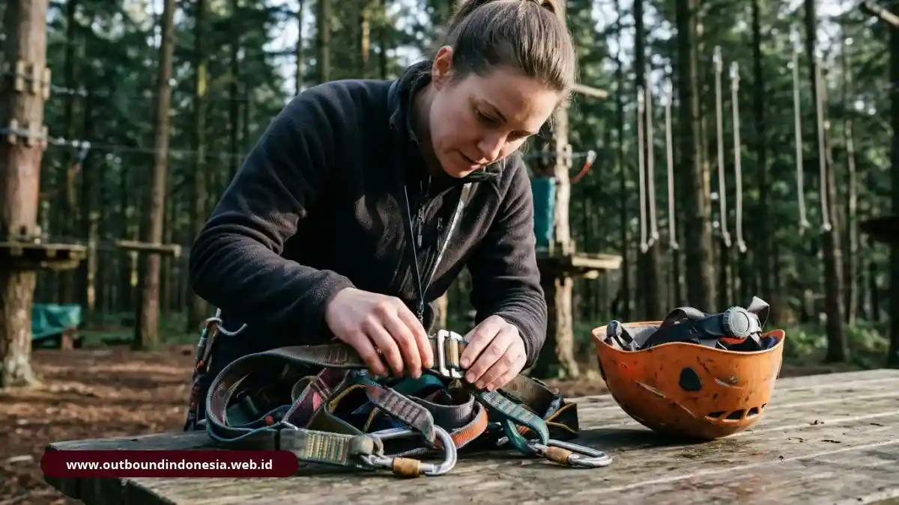

Perencanaan kegiatan outbound training mencakup penetapan sasaran melalui kajian mendalam terhadap kebutuhan organisasi, pemilihan aktivitas yang relevan, perhitungan terperinci komponen biaya, penjaminan protokol keselamatan yang ketat, serta seleksi mitra penyedia layanan yang memiliki fasilitator berkualifikasi dan program debriefing yang terstruktur dengan baik. Susunan ini menghalangi kegiatan tersebut agar tidak berubah menjadi aktivitas rekreasi yang tidak memiliki pengaruh signifikan.
Bagaimana Tahapan Merencanakan Outbound Training yang Efektif?
Tahapan efektif dimulai dari analisis kebutuhan, dilanjutkan dengan penetapan tujuan, pemilihan aktivitas, penyusunan alur, strategi debriefing, dan rencana penerapan di tempat kerja.
Kerangka Sepuluh Langkah Perencanaan:
- Kumpulkan masalah dan harapan dari pimpinan serta peserta.
- Lakukan analisis kebutuhan pelatihan (Training Needs Analysis).
- Rumuskan tujuan pelatihan yang terukur (SMART).
- Tentukan jumlah peserta, durasi, dan profil fisik peserta.
- Pilih aktivitas yang menjawab tujuan pengembangan tim.
- Susun alur acara secara progresif dari ringan ke menantang.
- Hitung anggaran berdasarkan komponen biaya riil.
- Tinjau keselamatan, peralatan, dan rencana cadangan (contingency).
- Pilih vendor profesional dan tandatangani kesepakatan tertulis.
- Jalankan acara, lakukan debriefing reflektif, dan evaluasi hasilnya.
Mengapa Training Needs Analysis Dilakukan Lebih Dulu?
Training Needs Analysis (TNA) dilakukan lebih dulu agar tujuan pelatihan berangkat dari masalah nyata tim, bukan dari asumsi panitia atau sekadar memilih paket wisata yang tersedia.
Sebuah rangkuman yang dirujuk penulis menyebut lebih dari 70 persen kegagalan di tempat kerja berkaitan dengan buruknya kolaborasi dan komunikasi. Bila hasil TNA menunjukkan masalah serupa, aktivitas sebaiknya fokus pada komunikasi dan koordinasi tim, bukan semata-mata uji fisik.
Bagaimana Memilih Aktivitas dan Menyusun Alur Acara?
Pilih aktivitas dari tujuan yang sudah dirumuskan, lalu urutkan dari yang ringan ke yang menantang agar kepercayaan terbangun bertahap.
Awali dengan ice breaking untuk mencairkan ketegangan, lanjutkan dengan low ropes atau pemecahan masalah kelompok, dan tempatkan aktivitas berat di tengah hingga akhir rundown. Sisipkan sesi refleksi (debriefing) singkat setelah tiap blok aktivitas selesai.
Bagaimana Menyiapkan Debriefing dan Rencana Aksi?
Siapkan debriefing dengan pertanyaan terarah tentang apa yang terjadi (What), mengapa hal tersebut terjadi (So What), dan apa yang akan diubah di tempat kerja (Now What), lalu catat hasilnya sebagai rencana aksi nyata.
Rencana aksi yang spesifik, misalnya menetapkan pola rapat koordinasi singkat lintas bagian setiap awal pekan, jauh lebih mudah diterapkan dan dipantau daripada kesimpulan umum seperti "kita harus lebih kompak".
Komponen-Komponen Biaya serta Metodologi Penyusunan Anggaran untuk Kegiatan Outbound
Komponen biaya outbound meliputi fasilitator, venue, peralatan, asuransi, konsumsi, dan transportasi, dan totalnya berbeda pada tiap program.
Apa Saja Komponen Cost Structure Outbound?
Struktur biaya kegiatan outbound mencakup komponen-komponen berikut: honorarium untuk instruktur dan fasilitator, biaya penyewaan tempat pelaksanaan (venue), penyediaan peralatan safety dan games, premi asuransi peserta, konsumsi makanan dan minuman, serta biaya transportasi operasional.
| Komponen Biaya | Hal yang Perlu Dikonfirmasi & Dibandingkan antar-Vendor |
|---|---|
| Instruktur dan fasilitator | Rasio fasilitator terhadap peserta (misal 1:10), jam terbang, sertifikasi profesi BNSP/AELI. |
| Venue & Lokasi | Kelayakan fasilitas toilet, mushola, daya tampung lapangan, area cadangan indoor jika hujan, akses jalan bus. |
| Peralatan Safety & Games | Standar sertifikasi alat (UIAA/CE untuk tali & harness), kondisi kebersihan, tanggal uji kelayakan. |
| Asuransi Peserta | Cakupan pertanggungan medis, batas plafon biaya pengobatan kecelakaan, dan kecepatan klaim. |
| Konsumsi dan Transportasi | Menu makanan, higienitas, ketersediaan air mineral berkala, kapasitas dan izin operasional armada kendaraan. |
Bagaimana Membandingkan Harga per Peserta antar-Paket?
Bandingkan harga per peserta dengan menyamakan dulu durasi, aktivitas, dan komponen yang termasuk, karena paket setengah hari, sehari penuh, dan paket menginap 2 hari 1 malam tidak sebanding secara langsung.
Minta rincian tertulis (itemized proposal) dan periksa apakah asuransi, konsumsi, dan peralatan sudah masuk dalam harga. Harga rendah belum tentu hemat bila komponen keselamatan atau rasio instruktur dikurangi demi menekan ongkos.
Apa Standar Keselamatan dan Manajemen Risiko Outbound?
Standar keselamatan outbound mencakup penilaian risiko lokasi, peralatan teruji, pertolongan pertama, protokol darurat, dan rencana cadangan cuaca.
Informasi yang disajikan bersifat umum dan memerlukan penyesuaian dengan peraturan lokal yang berlaku serta konsultasi dengan para ahli profesional di bidang safety outdoor.

Pemeriksaan ketat terhadap harness, carabiner, dan tali pengaman sebelum aktivitas high ropesBagaimana Menilai Risiko Venue dan Peralatan?
Menilai risiko venue dan peralatan berarti memeriksa kondisi medan tanah, kemiringan kontur, kelayakan perlengkapan, dan jumlah pendamping terlatih sebelum aktivitas dimulai.
Minta vendor menunjukkan dokumen penilaian risiko (risk assessment form) dan catatan log pemeriksaan peralatan. Aktivitas berisiko seperti flying fox, rappelling, atau rafting seharusnya hanya dijalankan dengan perlengkapan pengaman standar industri yang terawat prima.
Apa yang Perlu Disiapkan untuk P3K dan Tanggap Darurat?
Yang perlu disiapkan adalah kotak P3K lengkap, petugas lapangan yang terlatih pertolongan pertama gawat darurat, jalur evakuasi ambulans yang bebas hambatan, serta nomor kontak rumah sakit atau puskesmas terdekat.
Pastikan seluruh tim lapangan mengetahui prosedur darurat dan peran masing-masing. Data kondisi kesehatan peserta, seperti riwayat asma, penyakit jantung, alergi akut, atau cedera tulang belakang, wajib dikumpulkan melalui formulir screening sebelum hari pelaksanaan.
Bagaimana Mengantisipasi Cuaca dan Menyediakan Fasilitas Inklusif?
Antisipasi cuaca dilakukan dengan menyiapkan aula atau area dalam ruangan (indoor shelter) sebagai cadangan kegiatan darurat bila terjadi hujan lebat atau petir mendadak.
Fasilitas inklusif disediakan dengan merancang peran alternatif yang bermakna bagi peserta yang memiliki keterbatasan fisik, takut ketinggian ekstrem, atau fobia air. Peserta tersebut tetap dapat terlibat aktif sebagai koordinator taktik lapangan, pengamat strategi, atau pencatat dinamika tim.
Apa Kriteria Memilih Provider Outbound yang Profesional?
Provider profesional dinilai dari jam terbang dan sertifikasi fasilitator, kedalaman metodologi debriefing, serta komitmen dukungan setelah program selesai.
Mengapa Jam Terbang dan Sertifikasi Fasilitator Penting?
Jam terbang dan sertifikasi penting karena fasilitator yang berpengalaman mampu mengendalikan risiko kecelakaan lapangan sekaligus membaca dinamika psikologis kelompok peserta.
Tanyakan pengalaman menangani peserta dengan profil instansi yang serupa dengan Anda, sertifikasi kompetensi untuk aktivitas berisiko tinggi, serta testimoni atau kontak referensi dari klien perusahaan sebelumnya.
Mengapa Metodologi Debriefing Lebih Penting daripada Sekadar Permainan?
Metodologi debriefing lebih penting karena refleksi yang dipandu fasilitator mengubah pengalaman permainan menjadi pelajaran perilaku yang dapat diterapkan kembali di meja kerja.
Vendor yang baik dapat menjelaskan kerangka kerja (framework) yang mereka gunakan untuk menghubungkan tiap dinamika permainan dengan indikator kompetensi SDM. Bila proposal penawaran hanya berisi daftar permainan tanpa alokasi waktu debriefing yang cukup, kemungkinan besar kegiatan tersebut hanya bernilai rekreasi biasa.
Dukungan Pasca-Program Apa yang Perlu Ditanyakan?
Dukungan pasca-program yang perlu ditanyakan meliputi laporan evaluasi hasil (training report), rekomendasi tindak lanjut kepemimpinan, dan opsi sesi penguatan (refresher session) berkala.
Stabilisasi perubahan perilaku biasanya memerlukan waktu sekitar dua hingga tiga bulan pasca-pelatihan. Oleh karena itu, dukungan berkelanjutan dan monitoring internal di kantor sangat penting untuk mempertahankan hasil positif yang telah dicapai di lapangan.
Gambaran menyeluruh mengenai konsep, filosofi dasar, dan ragam jenis pelatihan luar ruang dapat Anda temukan di artikel pilar kami.
Checklist Persiapan Outbound
Checklist persiapan memastikan tidak ada komponen administratif, teknis, maupun keselamatan yang terlewat sebelum hari pelaksanaan kegiatan:
- Tujuan pelatihan: Rumusan sasaran tertulis dan disetujui pimpinan instansi.
- Analisis kebutuhan: Hasil TNA dan pemetaan masalah tim kerja tersedia.
- Daftar peserta & medis: Rekapitulasi peserta beserta catatan riwayat kesehatan khusus.
- Rincian anggaran: Surat penawaran dan kontrak kerja sama vendor bermaterai resmi.
- Verifikasi keselamatan: Dokumen SOP darurat dan bukti inspeksi kelaikan alat safety.
- Rencana kontingensi: Rute evakuasi medis terdekat dan ketersediaan aula cadangan cuaca buruk.
- Alur rundown: Jadwal acara memuat alokasi waktu debriefing yang memadai.
- Rencana aksi & evaluasi: Format pencatatan komitmen tim serta jadwal evaluasi 2-3 bulan pasca-program.
Kesimpulan Praktis
Perencanaan outbound yang berhasil bergerak dari kebutuhan ke tujuan, lalu ke aktivitas, kalkulasi anggaran, jaminan keselamatan, dan seleksi vendor yang tepat.
- Mulai dari Training Needs Analysis (TNA), jangan terburu-buru memesan lokasi.
- Bandingkan penawaran proposal berdasarkan kelengkapan komponen, bukan sekadar harga termurah.
- Jangan pernah menawar atau mengurangi aspek keselamatan dan asuransi peserta.
- Pilih vendor yang terbukti unggul dalam metodologi debriefing dan pelaporan evaluasi.
- Lakukan evaluasi kinerja tim secara konsisten setelah dua hingga tiga bulan kegiatan.

Tim Outbound Indonesia
Tim fasilitator berpengalaman dan praktisi experiential learning profesional. Berdedikasi membagikan wawasan keselamatan, dinamika tim, dan pengembangan kepemimpinan di alam bebas.